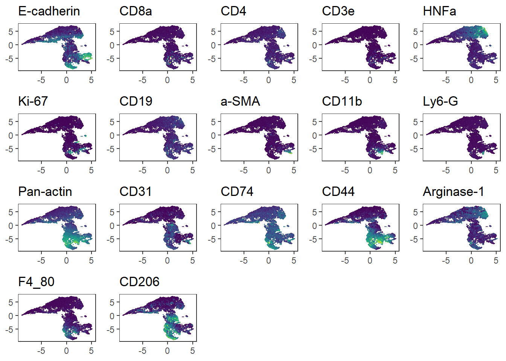
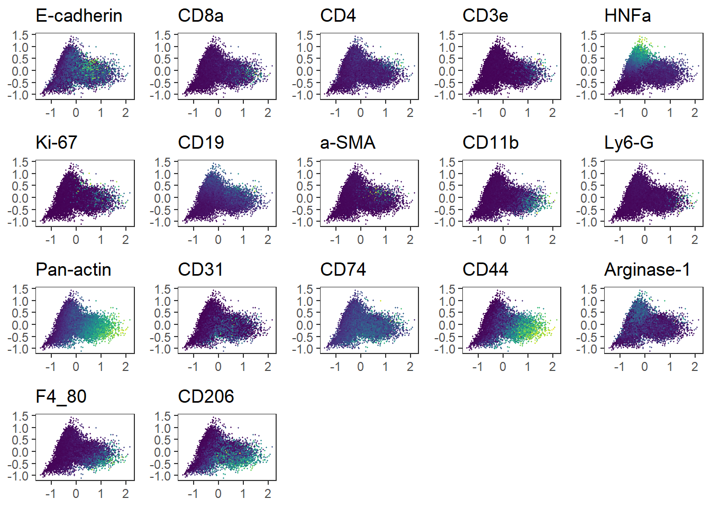

IMC data analysis workflow
Tess Brodie
University of Bern, DBMR, Visceral and Transplantation Surgery lab
Last updated: 2022-08-30
Checks: 6 1
Knit directory: 220707_workflowr/
This reproducible R Markdown analysis was created with workflowr (version 1.7.0). The Checks tab describes the reproducibility checks that were applied when the results were created. The Past versions tab lists the development history.
Great! Since the R Markdown file has been committed to the Git repository, you know the exact version of the code that produced these results.
Great job! The global environment was empty. Objects defined in the global environment can affect the analysis in your R Markdown file in unknown ways. For reproduciblity it’s best to always run the code in an empty environment.
The command set.seed(20220718) was run prior to running
the code in the R Markdown file. Setting a seed ensures that any results
that rely on randomness, e.g. subsampling or permutations, are
reproducible.
Great job! Recording the operating system, R version, and package versions is critical for reproducibility.
Nice! There were no cached chunks for this analysis, so you can be confident that you successfully produced the results during this run.
Using absolute paths to the files within your workflowr project makes it difficult for you and others to run your code on a different machine. Change the absolute path(s) below to the suggested relative path(s) to make your code more reproducible.
| absolute | relative |
|---|---|
| C:/Users/IMC Platform laptop/Users2/Tess/SteinbockCellSegmentation/220707/220707_workflowr | . |
Great! You are using Git for version control. Tracking code development and connecting the code version to the results is critical for reproducibility.
The results in this page were generated with repository version c445d7e. See the Past versions tab to see a history of the changes made to the R Markdown and HTML files.
Note that you need to be careful to ensure that all relevant files for
the analysis have been committed to Git prior to generating the results
(you can use wflow_publish or
wflow_git_commit). workflowr only checks the R Markdown
file, but you know if there are other scripts or data files that it
depends on. Below is the status of the Git repository when the results
were generated:
Ignored files:
Ignored: .Rhistory
Ignored: .Rproj.user/
Ignored: analysis/.Rhistory
Ignored: analysis/0_prep_data_cache/
Ignored: analysis/1_QC_mask_cache/
Ignored: analysis/3_dim_red_cache/
Ignored: analysis/4_cell_annotation_cache/
Ignored: analysis/5_sc_vis_cache/
Ignored: analysis/6_img_vis_cache/
Ignored: analysis/7_spatial_vis_cache/
Untracked files:
Untracked: Rplot.png
Untracked: UMAP_correctedvalues.pdf
Untracked: Umap_celltype_overlay.pdf
Untracked: allchannels_histogram.pdf
Untracked: allchannels_multidimplot.pdf
Untracked: alldata_lsecs.rds
Untracked: data/Joseentraining/
Untracked: data/Macro.ijm.ijm.ijm
Untracked: data/cellpose png masks/
Untracked: data/cluster_annotation.png
Untracked: data/cluster_annotation.xlsx
Untracked: data/fiji composite images/
Untracked: data/images.csv
Untracked: data/images.rds
Untracked: data/img/
Untracked: data/intensities/
Untracked: data/masks.rds
Untracked: data/masks/
Untracked: data/neighbors/
Untracked: data/panel.csv
Untracked: data/raw/
Untracked: data/regionprops/
Untracked: data/sample_metadata.xlsx
Untracked: data/spe.rds
Untracked: gated_cells/
Untracked: gated_cells2/
Untracked: marker_umap_corrected.png
Untracked: output/spe0.rds
Untracked: output/spe1.rds
Untracked: output/spe2.rds
Untracked: output/spe3.rds
Untracked: output/spe4.rds
Unstaged changes:
Deleted: analysis/about.Rmd
Deleted: analysis/license.Rmd
Note that any generated files, e.g. HTML, png, CSS, etc., are not included in this status report because it is ok for generated content to have uncommitted changes.
These are the previous versions of the repository in which changes were
made to the R Markdown
(analysis/2_batch_effect_correction.Rmd) and HTML
(docs/2_batch_effect_correction.html) files. If you’ve
configured a remote Git repository (see ?wflow_git_remote),
click on the hyperlinks in the table below to view the files as they
were in that past version.
| File | Version | Author | Date | Message |
|---|---|---|---|---|
| html | 41ee8fb | tessbrodie | 2022-08-30 | Build site. |
| Rmd | db869f5 | tessbrodie | 2022-08-30 | Publish the initial files for myproject |
Batch effect correction
Of note: the correction approaches presented here aim at removing any differences between samples. This will also remove biological differences between the patients/indications. Nevertheless, integrating cells across samples can facilitate the detection of cell phenotypes via clustering.
Load packages
library(batchelor)
library(scater)
library(cowplot)
library(dittoSeq)
library(viridis)
library(harmony)
library(Seurat)
library(SeuratObject)Load data
spe <- readRDS(file.path("output", "spe1.rds"))FastMNN method to correct for batch effect:
out <- fastMNN(spe, batch = spe$patient_id,
auto.merge = TRUE,
assay.type = "exprs")Loading required package: SpatialExperimentWarning in check_numbers(k = k, nu = nu, nv = nv, limit = min(dim(x)) - : more
singular values/vectors requested than availableWarning in (function (A, nv = 5, nu = nv, maxit = 1000, work = nv + 7, reorth =
TRUE, : You're computing too large a percentage of total singular values, use a
standard svd instead.# Transfer the correction results to the main spe object
reducedDim(spe, "fastMNN") <- reducedDim(out, "corrected")QC of corrected results: gives batch effect and lost variance values if combining samples
merge_info <- metadata(out)$merge.info
DataFrame(left = merge_info$left,
right = merge_info$right,
batch.size = merge_info$batch.size,
max_lost_var = rowMax(merge_info$lost.var))DataFrame with 5 rows and 4 columns
left right batch.size max_lost_var
<List> <List> <numeric> <numeric>
1 6 5 0.357777 0.0451654
2 6,5 2 0.599930 0.0761382
3 6,5,2 1 0.860286 0.0442115
4 6,5,2,... 4 0.664935 0.1257983
5 6,5,2,... 3 0.946328 0.1132999Visualization of batch corrections:
recompute the UMAP embedding using the corrected low-dimensional coordinates for each cell
spe <- runUMAP(spe, dimred= "fastMNN", name = "UMAP_mnnCorrected")
# visualize patient id
p1 <- dittoDimPlot(spe, var = "patient_id",
reduction.use = "UMAP", size = 0.2) +
scale_color_manual(values = metadata(spe)$color_vectors$patient_id) +
ggtitle("Patient ID on UMAP before correction")Scale for 'colour' is already present. Adding another scale for 'colour',
which will replace the existing scale.p2 <- dittoDimPlot(spe, var = "patient_id",
reduction.use = "UMAP_mnnCorrected", size = 0.2) +
scale_color_manual(values = metadata(spe)$color_vectors$patient_id) +
ggtitle("Patient ID on UMAP after correction")Scale for 'colour' is already present. Adding another scale for 'colour',
which will replace the existing scale.#pdf("UMAP_correctedvalues.pdf", width = 20, height = 9)
plot_grid(p1, p2)
dev.off()null device
1 plot_grid(p1, p2)Visualize the expression of selected markers across all cells before correction
markers <- c("E-cadherin", "CD8a", "CD4", "CD3e", "HNFa", "Ki-67", "CD19", "a-SMA", "CD11b", "Ly6-G", "Pan-actin", "CD31", "CD74", "CD44", "Arginase-1", "F4_80", "CD206" )
# Before correction
plot_list <- multi_dittoDimPlot(spe, var = markers, reduction.use = "UMAP",
assay = "exprs", size = 0.2, list.out = TRUE)
plot_list <- lapply(plot_list, function(x) x + scale_color_viridis())Scale for 'colour' is already present. Adding another scale for 'colour',
which will replace the existing scale.
Scale for 'colour' is already present. Adding another scale for 'colour',
which will replace the existing scale.
Scale for 'colour' is already present. Adding another scale for 'colour',
which will replace the existing scale.
Scale for 'colour' is already present. Adding another scale for 'colour',
which will replace the existing scale.
Scale for 'colour' is already present. Adding another scale for 'colour',
which will replace the existing scale.
Scale for 'colour' is already present. Adding another scale for 'colour',
which will replace the existing scale.
Scale for 'colour' is already present. Adding another scale for 'colour',
which will replace the existing scale.
Scale for 'colour' is already present. Adding another scale for 'colour',
which will replace the existing scale.
Scale for 'colour' is already present. Adding another scale for 'colour',
which will replace the existing scale.
Scale for 'colour' is already present. Adding another scale for 'colour',
which will replace the existing scale.
Scale for 'colour' is already present. Adding another scale for 'colour',
which will replace the existing scale.
Scale for 'colour' is already present. Adding another scale for 'colour',
which will replace the existing scale.
Scale for 'colour' is already present. Adding another scale for 'colour',
which will replace the existing scale.
Scale for 'colour' is already present. Adding another scale for 'colour',
which will replace the existing scale.
Scale for 'colour' is already present. Adding another scale for 'colour',
which will replace the existing scale.
Scale for 'colour' is already present. Adding another scale for 'colour',
which will replace the existing scale.
Scale for 'colour' is already present. Adding another scale for 'colour',
which will replace the existing scale.plot_grid(plotlist = plot_list) 
Visualize the expression of selected markers across all cells after correction
# After correction
plot_list <- multi_dittoDimPlot(spe, var = markers, reduction.use = "UMAP_mnnCorrected",
assay = "exprs", size = 0.2, list.out = TRUE)
plot_list <- lapply(plot_list, function(x) x + scale_color_viridis())Scale for 'colour' is already present. Adding another scale for 'colour',
which will replace the existing scale.
Scale for 'colour' is already present. Adding another scale for 'colour',
which will replace the existing scale.
Scale for 'colour' is already present. Adding another scale for 'colour',
which will replace the existing scale.
Scale for 'colour' is already present. Adding another scale for 'colour',
which will replace the existing scale.
Scale for 'colour' is already present. Adding another scale for 'colour',
which will replace the existing scale.
Scale for 'colour' is already present. Adding another scale for 'colour',
which will replace the existing scale.
Scale for 'colour' is already present. Adding another scale for 'colour',
which will replace the existing scale.
Scale for 'colour' is already present. Adding another scale for 'colour',
which will replace the existing scale.
Scale for 'colour' is already present. Adding another scale for 'colour',
which will replace the existing scale.
Scale for 'colour' is already present. Adding another scale for 'colour',
which will replace the existing scale.
Scale for 'colour' is already present. Adding another scale for 'colour',
which will replace the existing scale.
Scale for 'colour' is already present. Adding another scale for 'colour',
which will replace the existing scale.
Scale for 'colour' is already present. Adding another scale for 'colour',
which will replace the existing scale.
Scale for 'colour' is already present. Adding another scale for 'colour',
which will replace the existing scale.
Scale for 'colour' is already present. Adding another scale for 'colour',
which will replace the existing scale.
Scale for 'colour' is already present. Adding another scale for 'colour',
which will replace the existing scale.
Scale for 'colour' is already present. Adding another scale for 'colour',
which will replace the existing scale.plot_grid(plotlist = plot_list) 
Harmony correction:
Harmony returns the corrected low-dimensional coordinates for each cell
mat <- t(assay(spe, "exprs"))
harmony_emb <- HarmonyMatrix(mat, spe$patient_id, do_pca = TRUE, npcs = 15)Warning in (function (A, nv = 5, nu = nv, maxit = 1000, work = nv + 7, reorth =
TRUE, : You're computing too large a percentage of total singular values, use a
standard svd instead.Harmony 1/10Harmony 2/10Harmony 3/10Harmony 4/10Harmony 5/10Harmony 6/10Harmony 7/10Harmony 8/10Harmony 9/10Harmony 10/10Harmony converged after 10 iterationsreducedDim(spe, "UMAP_harmony") <- harmony_embVisualize the cells in low dimensions after UMAP embedding:
# visualize patient id
p1 <- dittoDimPlot(spe, var = "patient_id",
reduction.use = "UMAP", size = 0.2) +
scale_color_manual(values = metadata(spe)$color_vectors$patient_id) +
ggtitle("Patient ID on UMAP before correction")Scale for 'colour' is already present. Adding another scale for 'colour',
which will replace the existing scale.p2 <- dittoDimPlot(spe, var = "patient_id",
reduction.use = "UMAP_harmony", size = 0.2) +
scale_color_manual(values = metadata(spe)$color_vectors$patient_id) +
ggtitle("Patient ID on UMAP after correction")Scale for 'colour' is already present. Adding another scale for 'colour',
which will replace the existing scale.#pdf("UMAP_harmonycorrection.pdf", width = 20, height = 9)
plot_grid(p1, p2)
dev.off()null device
1 plot_grid(p1, p2)Visualize the expression of selected markers across all cells before correction
# Before correction
plot_list <- multi_dittoDimPlot(spe, var = markers, reduction.use = "UMAP",
assay = "exprs", size = 0.2, list.out = TRUE)
plot_list <- lapply(plot_list, function(x) x + scale_color_viridis())Scale for 'colour' is already present. Adding another scale for 'colour',
which will replace the existing scale.
Scale for 'colour' is already present. Adding another scale for 'colour',
which will replace the existing scale.
Scale for 'colour' is already present. Adding another scale for 'colour',
which will replace the existing scale.
Scale for 'colour' is already present. Adding another scale for 'colour',
which will replace the existing scale.
Scale for 'colour' is already present. Adding another scale for 'colour',
which will replace the existing scale.
Scale for 'colour' is already present. Adding another scale for 'colour',
which will replace the existing scale.
Scale for 'colour' is already present. Adding another scale for 'colour',
which will replace the existing scale.
Scale for 'colour' is already present. Adding another scale for 'colour',
which will replace the existing scale.
Scale for 'colour' is already present. Adding another scale for 'colour',
which will replace the existing scale.
Scale for 'colour' is already present. Adding another scale for 'colour',
which will replace the existing scale.
Scale for 'colour' is already present. Adding another scale for 'colour',
which will replace the existing scale.
Scale for 'colour' is already present. Adding another scale for 'colour',
which will replace the existing scale.
Scale for 'colour' is already present. Adding another scale for 'colour',
which will replace the existing scale.
Scale for 'colour' is already present. Adding another scale for 'colour',
which will replace the existing scale.
Scale for 'colour' is already present. Adding another scale for 'colour',
which will replace the existing scale.
Scale for 'colour' is already present. Adding another scale for 'colour',
which will replace the existing scale.
Scale for 'colour' is already present. Adding another scale for 'colour',
which will replace the existing scale.plot_grid(plotlist = plot_list) 
Visualize the expression of selected markers across all cells after correction
# After correction
plot_list <- multi_dittoDimPlot(spe, var = markers, reduction.use = "UMAP_harmony",
assay = "exprs", size = 0.2, list.out = TRUE)
plot_list <- lapply(plot_list, function(x) x + scale_color_viridis())Scale for 'colour' is already present. Adding another scale for 'colour',
which will replace the existing scale.
Scale for 'colour' is already present. Adding another scale for 'colour',
which will replace the existing scale.
Scale for 'colour' is already present. Adding another scale for 'colour',
which will replace the existing scale.
Scale for 'colour' is already present. Adding another scale for 'colour',
which will replace the existing scale.
Scale for 'colour' is already present. Adding another scale for 'colour',
which will replace the existing scale.
Scale for 'colour' is already present. Adding another scale for 'colour',
which will replace the existing scale.
Scale for 'colour' is already present. Adding another scale for 'colour',
which will replace the existing scale.
Scale for 'colour' is already present. Adding another scale for 'colour',
which will replace the existing scale.
Scale for 'colour' is already present. Adding another scale for 'colour',
which will replace the existing scale.
Scale for 'colour' is already present. Adding another scale for 'colour',
which will replace the existing scale.
Scale for 'colour' is already present. Adding another scale for 'colour',
which will replace the existing scale.
Scale for 'colour' is already present. Adding another scale for 'colour',
which will replace the existing scale.
Scale for 'colour' is already present. Adding another scale for 'colour',
which will replace the existing scale.
Scale for 'colour' is already present. Adding another scale for 'colour',
which will replace the existing scale.
Scale for 'colour' is already present. Adding another scale for 'colour',
which will replace the existing scale.
Scale for 'colour' is already present. Adding another scale for 'colour',
which will replace the existing scale.
Scale for 'colour' is already present. Adding another scale for 'colour',
which will replace the existing scale.plot_grid(plotlist = plot_list) 
Seurat correction
Seurat performs batch correction similarly to fastMNN by finding mutual nearest neighbors (MNN) in low dimensional space before correcting the expression values of cells
Integrate markers and patient Ids ### Did not work for me
PCA reduction in seurat method:
Recompute the UMAP embeddings based on Seurat integrated results and visualize the embedding
Visualize patient id
Visualize the expression of selected markers across all cells before correction
Visualize the expression of selected markers across all cells after correction
Save data
saveRDS(spe, file.path("output", "spe2.rds"))
sessionInfo()R version 4.2.1 (2022-06-23 ucrt)
Platform: x86_64-w64-mingw32/x64 (64-bit)
Running under: Windows 10 x64 (build 19044)
Matrix products: default
locale:
[1] LC_COLLATE=English_Switzerland.utf8 LC_CTYPE=English_Switzerland.utf8
[3] LC_MONETARY=English_Switzerland.utf8 LC_NUMERIC=C
[5] LC_TIME=English_Switzerland.utf8
attached base packages:
[1] stats4 stats graphics grDevices utils datasets methods
[8] base
other attached packages:
[1] SpatialExperiment_1.6.0 sp_1.5-0
[3] SeuratObject_4.1.0 Seurat_4.1.1
[5] harmony_0.1.0 Rcpp_1.0.9
[7] viridis_0.6.2 viridisLite_0.4.0
[9] dittoSeq_1.8.1 cowplot_1.1.1
[11] scater_1.24.0 ggplot2_3.3.6
[13] scuttle_1.6.2 batchelor_1.12.3
[15] SingleCellExperiment_1.18.0 SummarizedExperiment_1.26.1
[17] Biobase_2.56.0 GenomicRanges_1.48.0
[19] GenomeInfoDb_1.32.2 IRanges_2.30.0
[21] S4Vectors_0.34.0 BiocGenerics_0.42.0
[23] MatrixGenerics_1.8.1 matrixStats_0.62.0
[25] workflowr_1.7.0
loaded via a namespace (and not attached):
[1] utf8_1.2.2 R.utils_2.12.0
[3] reticulate_1.25 tidyselect_1.1.2
[5] htmlwidgets_1.5.4 grid_4.2.1
[7] BiocParallel_1.30.3 Rtsne_0.16
[9] DropletUtils_1.16.0 munsell_0.5.0
[11] ScaledMatrix_1.4.0 codetools_0.2-18
[13] ica_1.0-3 future_1.27.0
[15] miniUI_0.1.1.1 withr_2.5.0
[17] spatstat.random_2.2-0 colorspace_2.0-3
[19] progressr_0.10.1 highr_0.9
[21] knitr_1.39 rstudioapi_0.14
[23] ROCR_1.0-11 tensor_1.5
[25] listenv_0.8.0 labeling_0.4.2
[27] git2r_0.30.1 GenomeInfoDbData_1.2.8
[29] polyclip_1.10-0 farver_2.1.1
[31] pheatmap_1.0.12 rhdf5_2.40.0
[33] rprojroot_2.0.3 parallelly_1.32.1
[35] vctrs_0.4.1 generics_0.1.3
[37] xfun_0.31 R6_2.5.1
[39] ggbeeswarm_0.6.0 rsvd_1.0.5
[41] locfit_1.5-9.6 bitops_1.0-7
[43] rhdf5filters_1.8.0 spatstat.utils_2.3-1
[45] cachem_1.0.6 DelayedArray_0.22.0
[47] assertthat_0.2.1 promises_1.2.0.1
[49] scales_1.2.1 rgeos_0.5-9
[51] beeswarm_0.4.0 gtable_0.3.0
[53] beachmat_2.12.0 globals_0.16.0
[55] processx_3.7.0 goftest_1.2-3
[57] rlang_1.0.4 splines_4.2.1
[59] lazyeval_0.2.2 spatstat.geom_2.4-0
[61] yaml_2.3.5 reshape2_1.4.4
[63] abind_1.4-5 httpuv_1.6.5
[65] tools_4.2.1 ellipsis_0.3.2
[67] spatstat.core_2.4-4 jquerylib_0.1.4
[69] RColorBrewer_1.1-3 ggridges_0.5.3
[71] plyr_1.8.7 sparseMatrixStats_1.8.0
[73] zlibbioc_1.42.0 purrr_0.3.4
[75] RCurl_1.98-1.7 ps_1.7.1
[77] rpart_4.1.16 deldir_1.0-6
[79] pbapply_1.5-0 zoo_1.8-10
[81] ggrepel_0.9.1 cluster_2.1.3
[83] fs_1.5.2 magrittr_2.0.3
[85] magick_2.7.3 data.table_1.14.2
[87] scattermore_0.8 ResidualMatrix_1.6.1
[89] lmtest_0.9-40 RANN_2.6.1
[91] whisker_0.4 fitdistrplus_1.1-8
[93] patchwork_1.1.2 mime_0.12
[95] evaluate_0.16 xtable_1.8-4
[97] gridExtra_2.3 compiler_4.2.1
[99] tibble_3.1.7 KernSmooth_2.23-20
[101] R.oo_1.25.0 htmltools_0.5.3
[103] mgcv_1.8-40 later_1.3.0
[105] tidyr_1.2.0 DBI_1.1.3
[107] MASS_7.3-58 Matrix_1.4-1
[109] cli_3.3.0 R.methodsS3_1.8.2
[111] parallel_4.2.1 igraph_1.3.4
[113] pkgconfig_2.0.3 getPass_0.2-2
[115] plotly_4.10.0 spatstat.sparse_2.1-1
[117] vipor_0.4.5 bslib_0.4.0
[119] dqrng_0.3.0 XVector_0.36.0
[121] stringr_1.4.0 callr_3.7.2
[123] digest_0.6.29 sctransform_0.3.4
[125] RcppAnnoy_0.0.19 spatstat.data_2.2-0
[127] rmarkdown_2.15 leiden_0.4.2
[129] edgeR_3.38.1 uwot_0.1.14
[131] DelayedMatrixStats_1.18.0 shiny_1.7.2
[133] rjson_0.2.21 lifecycle_1.0.1
[135] nlme_3.1-158 jsonlite_1.8.0
[137] Rhdf5lib_1.18.2 BiocNeighbors_1.14.0
[139] limma_3.52.2 fansi_1.0.3
[141] pillar_1.8.1 lattice_0.20-45
[143] fastmap_1.1.0 httr_1.4.4
[145] survival_3.3-1 glue_1.6.2
[147] png_0.1-7 stringi_1.7.8
[149] sass_0.4.2 HDF5Array_1.24.1
[151] BiocSingular_1.12.0 dplyr_1.0.9
[153] irlba_2.3.5 future.apply_1.9.0